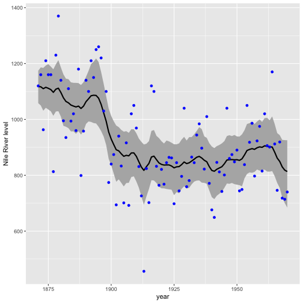
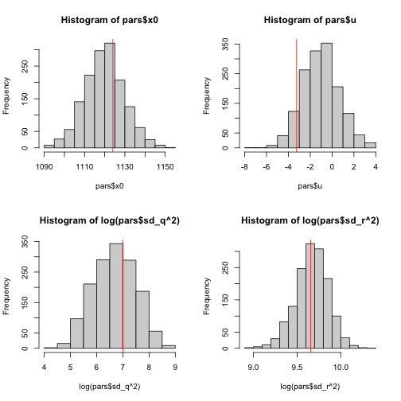

2.7 Fitting with Stan
Let’s fit the same model with Stan using the {rstan} package. If you have not already, you will need to install the {rstan} package. This package depends on a number of other packages which should install automatically when you install {rstan}.
library(datasets)
library(rstan)
y <- as.vector(Nile)First we write the model. We could write this to a file (recommended), but for this example, we write as a character object. Though the syntax is different from the JAGS code, it has many similarities. Note, unlike the JAGS, the Stan does not allow any NAs in your data. Thus we have to specify the location of the NAs in our data. The Nile data does not have NAs, but we want to write the code so it would work even if there were NAs.
scode <- "
data {
int<lower=0> TT;
int<lower=0> n_pos; // number of non-NA values
int<lower=0> indx_pos[n_pos]; // index of the non-NA values
vector[n_pos] y;
}
parameters {
real x0;
real u;
vector[TT] pro_dev;
real<lower=0> sd_q;
real<lower=0> sd_r;
}
transformed parameters {
vector[TT] x;
x[1] = x0 + u + pro_dev[1];
for(i in 2:TT) {
x[i] = x[i-1] + u + pro_dev[i];
}
}
model {
x0 ~ normal(y[1],10);
u ~ normal(0,2);
sd_q ~ cauchy(0,5);
sd_r ~ cauchy(0,5);
pro_dev ~ normal(0, sd_q);
for(i in 1:n_pos){
y[i] ~ normal(x[indx_pos[i]], sd_r);
}
}
generated quantities {
vector[n_pos] log_lik;
for (i in 1:n_pos) log_lik[i] = normal_lpdf(y[i] | x[indx_pos[i]], sd_r);
}
"Then we call stan() and pass in the data, names of parameter we wish to have returned, and information on number of chains, samples (iter), and thinning. The output is verbose (hidden here) and may have some warnings.
# We pass in the non-NA ys as vector
ypos <- y[!is.na(y)]
n_pos <- sum(!is.na(y)) #number on non-NA ys
indx_pos <- which(!is.na(y)) #index on the non-NAs
mod <- rstan::stan(model_code = scode, data = list(y = ypos,
TT = length(y), n_pos = n_pos, indx_pos = indx_pos), pars = c("sd_q",
"x", "sd_r", "u", "x0"), chains = 3, iter = 1000, thin = 1)We use extract() to extract the parameters from the fitted model. The estimated level is x and we will plot that with the 95% credible intervals.
pars <- rstan::extract(mod)
pred_mean <- apply(pars$x, 2, mean)
pred_lo <- apply(pars$x, 2, quantile, 0.025)
pred_hi <- apply(pars$x, 2, quantile, 0.975)Here is a ggplot() version of the plot.
library(ggplot2)
nile <- data.frame(y = y, year = 1871:1970)
h <- ggplot(nile, aes(year))
h + geom_ribbon(aes(ymin = pred_lo, ymax = pred_hi), fill = "grey70") +
geom_line(aes(y = pred_mean), size = 1) + geom_point(aes(y = y),
color = "blue") + labs(y = "Nile River level")
We can plot the histogram of the samples against the values estimated via maximum likelihood.
par(mfrow = c(2, 2))
hist(pars$x0)
abline(v = coef(kem.3)$x0, col = "red")
hist(pars$u)
abline(v = coef(kem.3)$U, col = "red")
hist(log(pars$sd_q^2))
abline(v = log(coef(kem.3)$Q), col = "red")
hist(log(pars$sd_r^2))
abline(v = log(coef(kem.3)$R), col = "red")